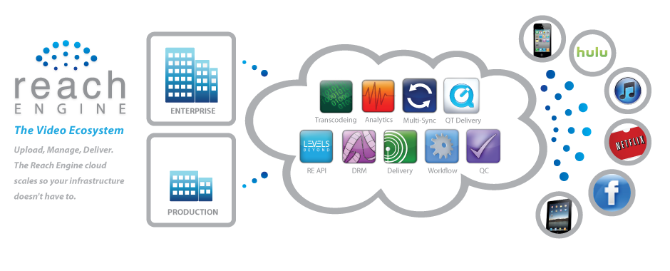

Digital Asset Management.
Working closely with Levels Beyond, Intuitive Asset Management has helped build many digital asset management solutions for our clients. With a robust postgres database at its core, our asset management systems can be customized to cater to any kind of workflow. We are also able to support and extend any current system you may have in place.
Reach Engine Platform.
When working with assets in the Levels Beyond Reach Engine platform, we start the process by ingesting your original files as their own timeline. These timelines can then be edited within out clip creation and meta-tagging mode. Through this powerful web interface, users can create smaller clips from the original full-length master files, add metadata to these clips, use these clips to NLE systems such as Final Cut Pro, Adobe Premie, or Avid, and even deliver these clips in the format of their choice to clients and partners across the globe through the integration with the Levels Beyond Reach Out Cloud Services.
Film and Video Post Production:
Intuitive Asset Management provides Levels Beyond Reach Engine solutions catered specifically to the needs of the feature film and television post-production workflows. From a thorough and customizable review and approval system to the automation of exports making sure that outputs are delivered according to the proper specififications every time, there are many ways in which the Reach Engine Ecosystem can enhance the traditional film and video production workflow.
Reach Engine For Training Videos:
Companies developing training curriculum for a wide variety of industries have found the organizational capabilities of the Reach Engine platform to greatly enhance their workflows in being able to manage massive libraries of footage that can be organized based on the course type, client, and subject matter. Add to this the ability to store preferences for an automate delivery according to the specs of each client. Reach Engine is the ideal solution for training curriculum developers.
Workflow Automation.
Workflow automation basically means we can give you one button to accomplish many tasks. Intuitive Asset Management provides custom automation scripting to automate as much of your workflow as possible. Let us give you a free one-hour onsite consultation to give you some ideas on how we can improve the efficiency of your workflow through automation.
Digital Sinage:
Digital Signage automation assists our clients like Play Networks, BannerCaswell Productions, and Earthstream Media to organize and deliver content simply, quickly, and able to do basic clip editing on any desktop Mac or Windows system. With single click deliveries to hundreds or thousands of screen in a wide variety of formats all automated through Reach Engine.
Audio Production:
The audio production workflow can be greatly enhanced through the use of powerful digital asset management and workflow automation. The use of Reach Engine in audio production can help get rid of complex file hierarchies that are commonly used to keep track of the wide variety of files for the different audio segments a company may be working on.